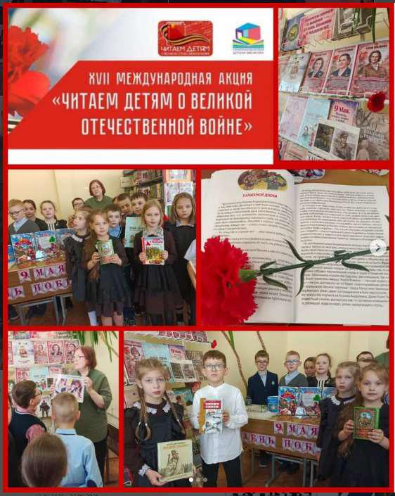

ГИМНАЗИСТЫ ПРИСОЕДИНИЛИСЬ К МЕЖДУНАРОДНОЙ АКЦИИ «ЧИТАЕМ ДЕТЯМ О ВОЙНЕ»
Библиотека нашей гимназии стала частью значимого события – XVII Международной Акции по поддержке детского чтения «Читаем детям о Великой Отечественной войне».

6 мая учащиеся 2 «В» класса приняли участие в этом мероприятии, организованном в стенах библиотеки. Для ребят была подготовлена особая программа, позволившая погрузиться в героическое прошлое нашей страны.
Встреча началась с тематической беседы. Библиотекарь рассказала школьникам о значении Великой Победы, о подвиге советского народа и о том, какую огромную цену пришлось заплатить за мирное небо над головой.
Затем ребята познакомились с книжной выставкой «Эхо победных лет», специально оформленной к этой дате. На выставке представлены лучшие образцы детской литературы о Великой Отечественной войне: повести, рассказы и стихи, которые помогают сохранить память о тех суровых годах и передать её новым поколениям.
Кульминацией встречи стало громкое чтение рассказа известного детского писателя Льва Кассиля «У классной доски». Этот трогательный и сильный рассказ о смелости и стойкости простых школьников и их учительницы в годы войны не оставил детей равнодушными.
После чтения состоялось живое обсуждение. Второклассники рассуждали о поступках героев, делились своими впечатлениями и отвечали на вопросы: что такое совесть? Почему учительница и ребята не побоялись врага? Что значит быть патриотом?
Такие мероприятия играют огромную роль в патриотическом воспитании. Они не только знакомят детей с лучшими произведениями о войне, но и помогают понять всю глубину и важность подвига их прадедов, почувствовать личную связь с историей своей страны.
Мы уверены, что эта встреча надолго останется в сердцах наших учеников и зажжёт в них искру интереса к книгам о настоящем героизме, мужестве и любви к Родине.